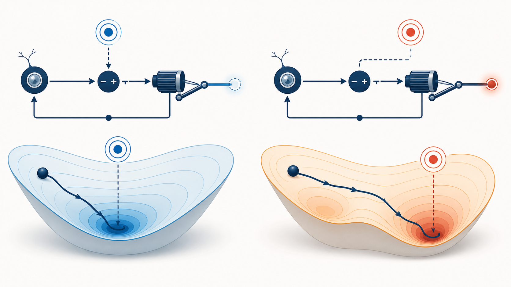
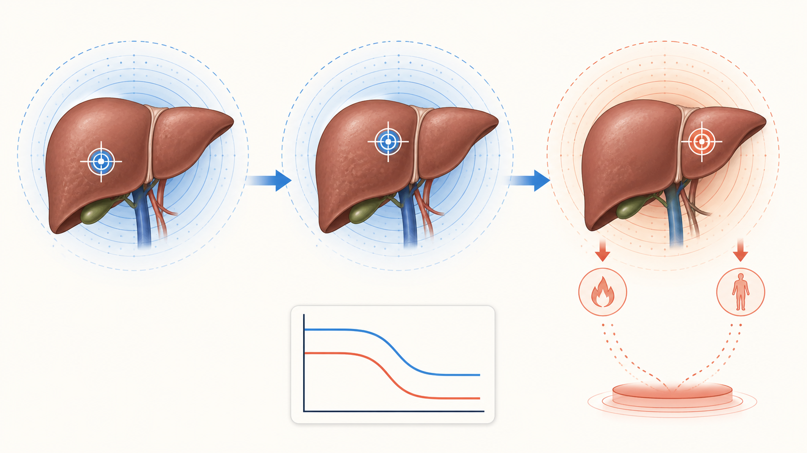
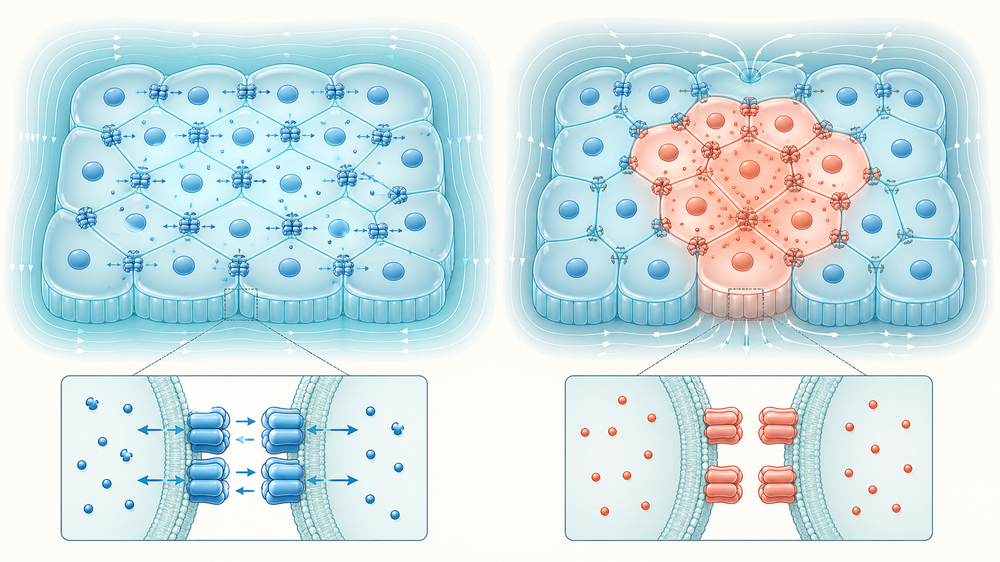
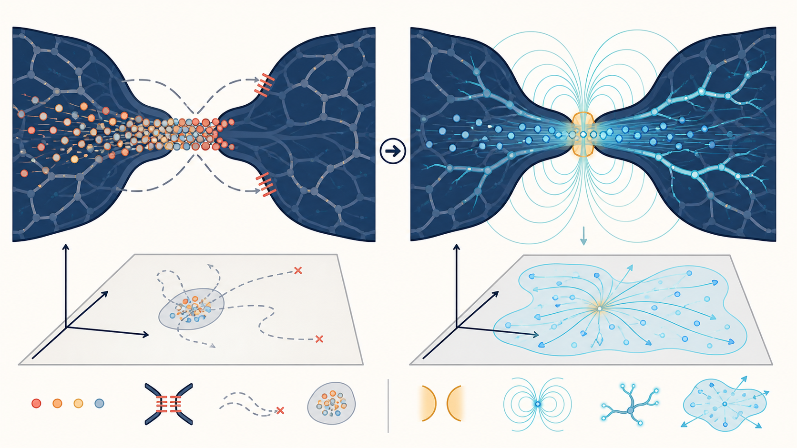

¿Qué conexión se le cerró?
Módulo 3 · Bloque 1
El paciente que hace todo bien y no mejora.
¿Y si el cuerpo funciona bien… hacia un objetivo que ya no corresponde?
PREGUNTA AL GRUPO¿Por qué no mejora?
El GPS con la dirección equivocada
Puede manejar muy bien hacia el lugar equivocado.
Más indicaciones de manejo solo lo hacen llegar más rápido.

IDEA CLAVEEl problema está en el dato que recibió, no en cómo maneja.
El mismo patrón en el cuerpo
La estructura está. El valor defendido se corrió.
Procesa · elimina · sostiene
La carga bajó; la referencia no

PIZARRÓNLA ESTRUCTURA ESTÁ · EL VALOR QUE DEFIENDE ESTÁ CORRIDO
La avenida cerrada
Los coches están. Los caminos desaparecieron.
Las restricciones organizan la ciudad. La pregunta es cuáles se cerraron de más.
DISTINCIÓNUna restricción no es una falla; una restricción que quedó cerrada fuera de contexto sí puede serlo.
La isla de despolarización
La célula conserva estructura. Pierde información de alrededor.
K⁺ afuera: 4 → 20–40
Despolarización → cierre de uniones
Sin radio: solo reacciona a lo directo

PIZARRÓNSE CIERRAN LAS CONEXIONES → SE PIERDE LA INFORMACIÓN DE ALREDEDOR
La herramienta de esta hora
¿Qué valor está defendiendo?
Zona despolarizada + uniones cerradas → conexión
Hígado en modo sobrecarga meses después → valor
Tejido aislado que solo responde a lo directo → conexión
MATIZAl cerrarse una conexión también se pierde información de alrededor; C y H pueden degradarse juntas.
Dos maneras de resolver el tráfico
Más taxis o una avenida abierta.
Añadir capacidad no crea rutas. Cambiar la restricción sí.
+ 200 taxis
Abrir la avenida
PREGUNTA¿Cuál resuelve más: doscientos taxis nuevos o abrir una avenida cerrada?
El imán como compuerta
No aporta sustancia. Cambia las condiciones de campo.
La hipótesis operativa: el gradiente favorece la reapertura del paso de información.
Más potencia = empujar el mismo sitio
Segundo polo = formar gradiente

PREGUNTASi no consigue nada, ¿más potencia en el mismo sitio o el segundo polo para formar gradiente?
El mapa donde viven las dos preguntas
Cinco piezas describen un sistema que se regula solo.
Estados
Todas las esquinas posibles.
Acciones
Avanzar, girar, frenar.
Restricciones
Las calles cerradas.
Evaluación
La dirección en el GPS.
Horizonte
Cuántas cuadras ve.
HOY TRABAJAMOS DOSC: qué conexión se cerró · E: qué valor está defendiendo.
Una hora después, las letras ya tienen contenido
P = ⟨S, O, C, E, H⟩
¿Qué le pasa a un sistema que cambió su planteamiento con razón… y después no pudo volver a cambiarlo?
MARCOLos sistemas vivos no solo se mueven en su mapa: pueden modificar restricciones, criterio y horizonte.
La pregunta para el resto del día
¿Qué conexión se cerró y qué valor está defendiendo cada sistema?
Barrera e intestinal
Metabólico
Inflamatorio
Biotransformación
Redox
Se atiende primero el sistema cuya conexión cerrada le cierra el paso a los demás.
SIGUIENTEEmpezamos con barrera e intestinal.